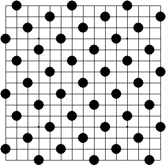

防守選點２
空間大的點
一般對局中，常見利用活三拓展進攻空間的手法，當自身沒有先手時，通常是防守在較易進攻或空間較大的那一方，高手著重的，不單只是把眼前的活三防住，而是縮小對手展開的空間
瑞星定石
白方目前有一個活三和一個活二，黑要防哪好呢？
因白上方有連續進攻，所以應防在Ａ點
若下在Ｂ，白雖然只有死三和活二，但空間充足，要取勝綽綽有餘
因空間很大，只要將攻勢帶到上方擺脫黑棋，
之後取勝不難
白８活三，擋Ｂ點黑下方好像有攻勢
但若擋Ｂ點，白10一佈子，進攻又被白棋牽制住
上方空間太大無法防守，白簡單勝
有利進攻的點
對手沒後續手段時，擋有利進攻的點
若下在Ａ，白無攻勢，黑再做活二可繼續進攻
正確要下在Ｂ點，黑左上沒有子力接應，沒有後續進攻
而白棋已有兩個活二
當然應該選擇有利進攻的Ｂ點
丘月一個黑勝變化，白６是敗著
至白10，這時白做了個四三前一手
若黑直接防在Ｂ點，也算穩健
但如果可以看出白在右方還不足以取勝
就會發現最好的下法應在Ａ點，既防住了白棋
更加強黑棋在左下的優勢
小馬步防守（八卦陣）
黑子每二顆間相隔一個日字，就像象棋中馬步的走法，所以稱之為小馬步，也有人叫八卦陣
假設某一方將整個棋盤用小馬步排滿，則那一方就已立於不敗，因為盤面上對手已沒有空間可形成五，就算是黑棋也不用怕被抓禁手。

小馬步算是一種強佔外側空間的防守方法，雖然看起來沒有什麼威脅，連個活二也沒有，但只要對手攻勢一停頓，花一二子來連接子力，很輕易就可將對方包圍，並組織攻勢，較好使用方法是先用小馬步將對手的攻勢化解，有機會就要馬上轉為進攻，不要有將整盤都下成小馬步的想法。
雨月開局
白方至20手，使用小馬步
先化解黑方先下的優勢後，再做連接進攻
黑21沒法再攻下去，白立刻連接子力，局部可勝
溪月開局
黑方３,５,７採用小馬步，佔據外勢，控制了空間
黑９時機成熟，開始連接子力進攻
白10防守，順勢包住白子，繼續做連接
這個變化黑優勢很大
破小馬步
因小馬步每一子都發揮最大的防守效率，但因太追求效率，沒什麼彈性，加上子力沒有連接，若遇高手，只要陣型一破，攻勢就會排山倒海而來。
黑方應下Ａ，踩白方的小馬步點，突破白方包圍網，並有足夠連接可進攻，比較另外下Ｂ點，
常看到很多人會選擇Ｃ點，但白方可繼續小馬步防守
這局面黑下Ａ或Ｂ都可以破解的
黑７,９先擴大空間，不被小馬步圍住，使白棋分散
黑11之後左右都有攻勢
黑13佔小馬步點，開始發動攻勢
很多人都知道，破小馬步就是要先下小馬步的陣點，但並不是隨時都可以下的，由上面的例子可知，需等週邊的子力都準備好時再下，這時馬步就是雙方必爭的攻守要點，何謂準備好呢？就是破馬步後可以形成攻勢時；若在未準備好的情況下，硬要下小馬步的陣點，因沒有後績攻勢，下小馬步的一方只要連接子力，轉守為攻即可。
本文參考「菁*_*魚丸湯的五子棋部落格 初學者的惡夢→★小馬步防守★」
http://tw.myblog.yahoo.com/jang20529/article?mid=570